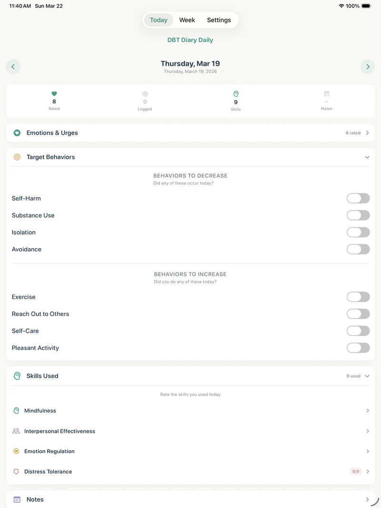

Choosing a format
Paper vs. Digital DBT Diary Cards
There is no universally better format. The useful diary card is the one that matches your treatment plan and is realistic to complete during an ordinary week.

A diary card is a record, not a technology decision. Both paper and digital formats can support a DBT routine when they capture the categories your therapist wants to review. The choice often comes down to practical questions: Where will you complete it? How private does it need to be? How will it get to session?
When paper can be a strong choice
A paper card is simple, familiar, and easy to annotate in a session. It requires no device, battery, setup, or learning curve. If your program already gives you a specific paper card and you reliably keep it with you, continuing with paper may be the best option.
Paper can be less convenient when it gets lost, left behind, or seen by someone you did not intend to share it with. Some people also find it hard to remember a daily sheet that lives outside the objects they use regularly.
When a digital card can help
A digital card can be available on the same device a person already carries. It may be easier to complete a brief entry at a consistent time, and it can make a weekly record easier to organize or export. For people who prefer not to leave a paper record in a bag or home, on-device storage and a device lock can be useful privacy considerations.
Digital is not automatically private or clinically appropriate. Consider who can unlock the device, how notifications behave, whether the app stores data remotely, and where exported documents go. Confirm how your therapist wants the card shared; a PDF is not the right workflow for every practice.
Compare the routine, not just the features
- Completion: Which format will you actually reach for most days?
- Fit: Does it use the targets, scales, and skills your therapist chose?
- Privacy: Who can see the record before you choose to share it?
- Session workflow: Can you bring, print, or share it in the way your clinician prefers?
- Safety: Does everyone understand that a diary card is not monitored crisis support?
Try one format with your therapist’s agreement for a few weeks, then discuss whether it improved consistency and made sessions easier to focus.
How DBT Diary Card: Skills Tracker fits
DBT Diary Card: Skills Tracker is a client-owned digital option for iPhone and iPad. Entries remain on the device; there are no accounts, cloud sync, or analytics. The user can export a PDF when they choose. That model may suit people who want an organized personal record to bring to therapy, but it does not provide clinician monitoring or replace a practice’s approved systems.
Sources
- SAMHSA/NCBI Bookshelf: Using technology-based therapeutic tools in behavioral health services
- University of Washington Behavioral Research & Therapy Clinics: diary-card resources
Important: This article is general education and not a recommendation for a particular treatment or privacy workflow. Discuss diary-card choices with your qualified provider. In an emergency, contact local emergency services or a crisis line.
Try the diary-card workflow
On-device entries, optional app lock, and PDF export for the dates you choose. Free download with paid full access.
Download on the App Store